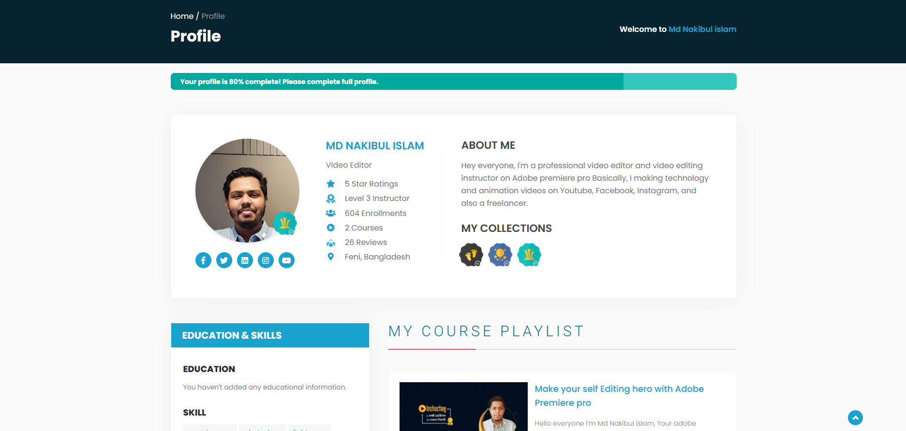
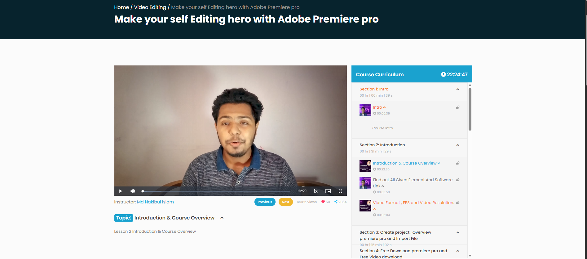
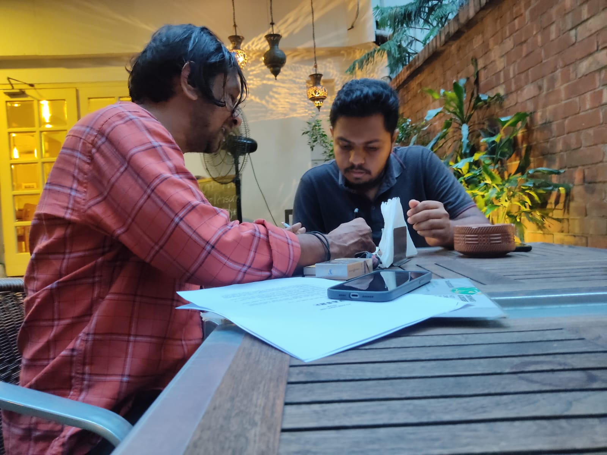

Freelance Instructor · Instructory · 2020–Aug 2024
Instructory: Teaching Video Editing, and Editing for AVASH
Instructory started as a side project, away from the day job writing backend code: a way to document my own video-editing workflow in Adobe Premiere Pro so I wouldn't have to relearn it every time. Turning that into an actual course — recording it, structuring it into lessons, publishing it under my own profile — was never meant to be a business. It just kept growing.
"Make Yourself Editing Hero with Adobe Premiere Pro" is now a 22+ hour course that's pulled in over 600 students, holds a 5-star rating, and earned me a Level 3 Instructor badge on the platform — taught the way I'd have wanted to learn it myself: intro, tools, project setup, and then the actual editing work, not just theory.
The course did what a portfolio is supposed to do: it put actual edited work in front of people who needed an editor. That's how AVASH, a music act, found me. Thanzin Tuni bhai, from the band, reached out, and we sat down together to go over the details and formalize the collaboration before any editing started — the kind of conversation that happens over a table with a phone and a stack of paperwork, not just a message thread.
What came out of it was the official video for "Camera" by AVASH — my edit, released under their name. It's the clearest example on this site of the course actually leading somewhere: not just views and a rating, but a real artist trusting me with their release.
On Instructory


Working with AVASH

More Editing Work
AVASH wasn't the first cut I made, and it wasn't the last. The very first video I ever edited was a documentary for FGC Science Club back at Feni Government College — the same club I'd go on to found. Since then it's been a mix of commercial work: product ads, a motion graphics piece, and a promotional video for a pharmaceutical brand.